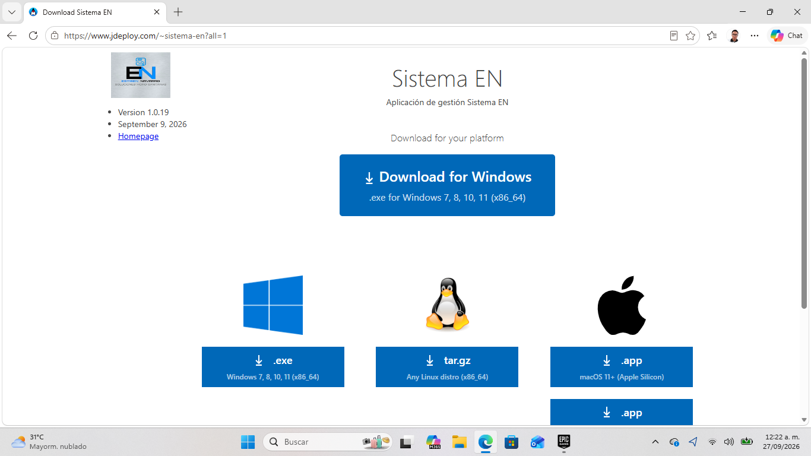
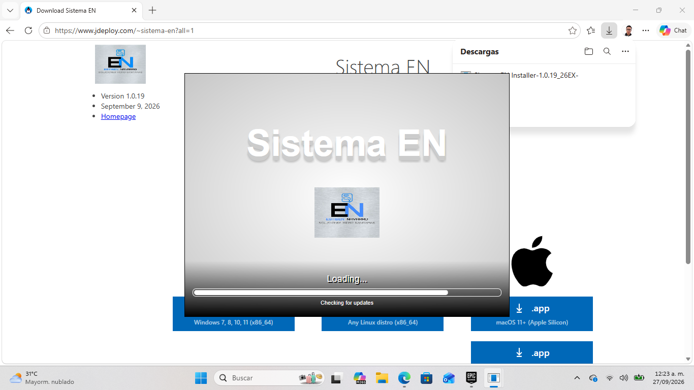
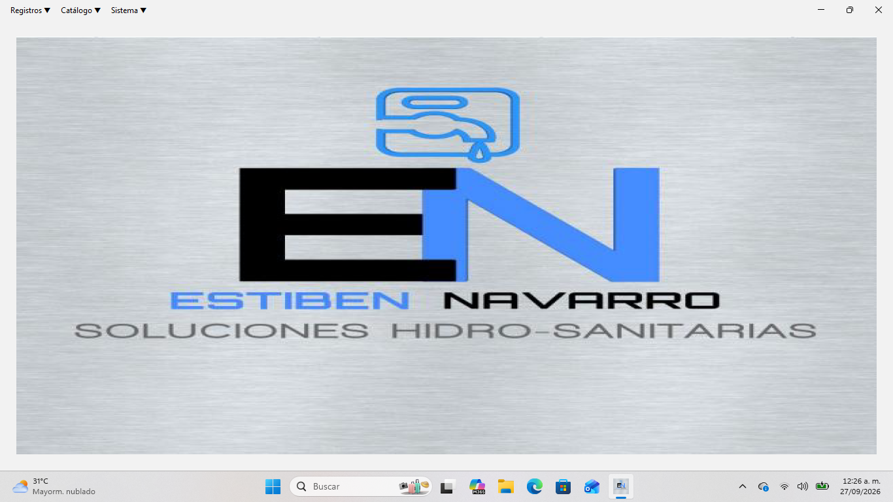

Proyecto
Sistema EN
Sistema EN es una aplicación de escritorio para administrar el trabajo de una empresa: permite registrar clientes, trabajadores y trabajos; generar cotizaciones con formato automático en Google Sheets; llevar la bitácora de actividades con evidencias en la nube; controlar pagos y herramientas; y mantener respaldos sincronizados en Google Drive.
Tecnologías utilizadas
Capturas de pantalla


